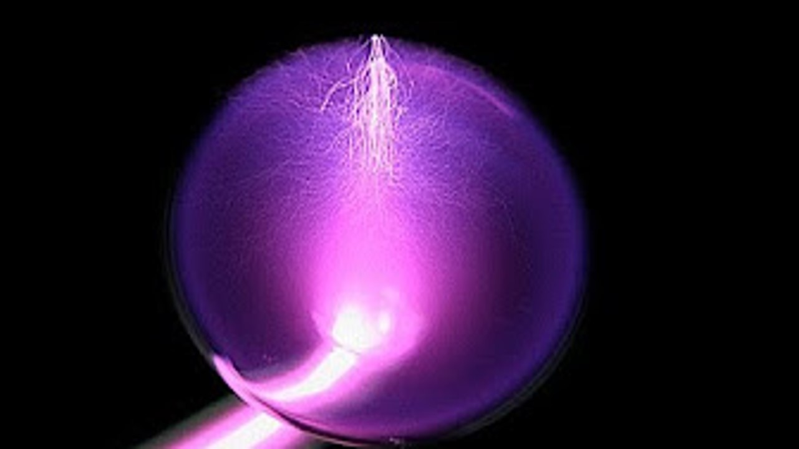

Godina: 1893.
Ljubičasta zraka je medicinski uređaj koji se koristio tijekom ranog 20. stoljeća za pražnjenje u elektroterapiji. Njihova je konstrukcija obično sadržavala zavojnicu pražnjenja s prekidačem za primjenu visokog napona, visoke frekvencije i slabe struje na ljudsko tijelo u terapeutske svrhe. Njihovu osnovnu konstrukciju izumio je Nikola Tesla, koji je svoje prve prototipove predstavio na svjetskoj kolumbijskoj izložbi 1893. godine. Većina antičkih ljubičastih zraka u SAD-u proizvedena je prije ere depresije, a neki od većih američkih proizvođača ljubičastih zraka bili su Renulife, Fitzgerald i Fisher. Mnoge tvrtke koje su mogle nastaviti proizvoditi ljubičaste zrake nakon depresije prestale su ih proizvoditi zbog Drugog svjetskog rata, kada su umjesto toga počele proizvoditi radio zavojnice i druge električne komponente za rat.